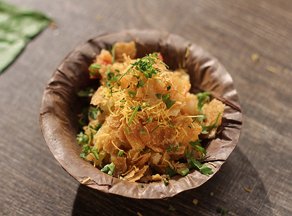

Description
Churmur is a type of chaat and one of the more inspired offerings to come out of a phuchkawala's cart. It contains the usual suspects—potatoes, boiled motor dal, tamarind, green chillies, coriander, and a variety of spices and seasoning—all mixed together and heaped upon a shalpata plate.
Ingredients:
- 200 g potatoes
- 60 g phuchka papri
- 5 g chhola (whole Bengal gram)
- 50 g motor dal (whole yellow peas)
- 10 g coriander leaves
- 7 g green chillies
- 15 g tamarind
- 2 tsp lime juice
- 5 g salt
- 5 g rocksalt
- 3 g bhaja masala
- 1 tsp chilli flakes
- 75 g hot water
Recipe:
- Soak the chhola and motor dal for about 12 hours. Wash them after that. Drain the chhola and set it aside. Boil the motor dal until it softens but remains whole (it should not disintegrate). Drain the motor dal and leave it to cool.
- Boil the potatoes till they are tender. Peel and dice into 1-cm cubes, and transfer them to a mixing bowl.
- While the potatoes are boiling, add 75 g hot water to the tamarind and allow it to soak for 15 minutes. This will soften the tamarind and ensure easy extraction of the pulp. Work the tamarind between your fingers to separate the skin and seeds. Press to squeeze out all the juice and discard the seeds. You should be left with some smooth tamarind pulp.
- At this point, also roughly crush the green chillies using a mortar and pestle, chop coriander leaves, and slice the lime.
- Back to the mixing bowl with the diced potatoes: add soaked chhola, boiled motor dal, chopped coriander, crushed green chillies, lime juice, tamarind pulp, salt, rocksalt, chilli flakes and bhaja masala. Crush the _papri_s and add them too.
- Mix until everything is evenly combined. Use a light hand so that you don’t mash the potatoes or grind the papri to a fine powder—we want them to remain chunky. Serve immediately.